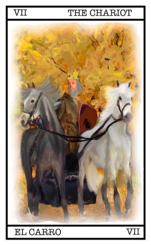

Significado
CerrarTómate un momento para pensar en la pregunta que quieres hacer.
Recuerda hacer preguntas del estilo a: "Como me irá si...?".
Haciendo esta pregunta tú eres el responsable de tus decisiones, y el Tarot solo te da información.
Si necesitas ayuda en como formular la pregunta pulsa aquí.
Cuando estes list@ escoge el contexto.
INTERPRETACIÓN
Contexto:
Selecciona una carta y arrastrala hasta el cuadro libre de la izquierda. Verás que se ilumina el marco de color rojo cuando la puedas soltar. A continuación, escoge otra carta y suéltala en el cuadro de la derecha.
Para seleccionar las cartas tienes dos opciones:
Arrastre rápido: desliza el dedo desde la baraja hasta el cuadro correspondiente.
Selección precisa: desliza el dedo de forma horizontal encima de las cartas por la parte media de la baraja. La carta que se encuentra justo debajo del dedo sobresaldrá un poco. Levanta el dedo y vuelve a ponerlo en la parte que ha sobresalido. Ahora solo tienes que llevarlo al cuadro correspondiente.
Cerrar